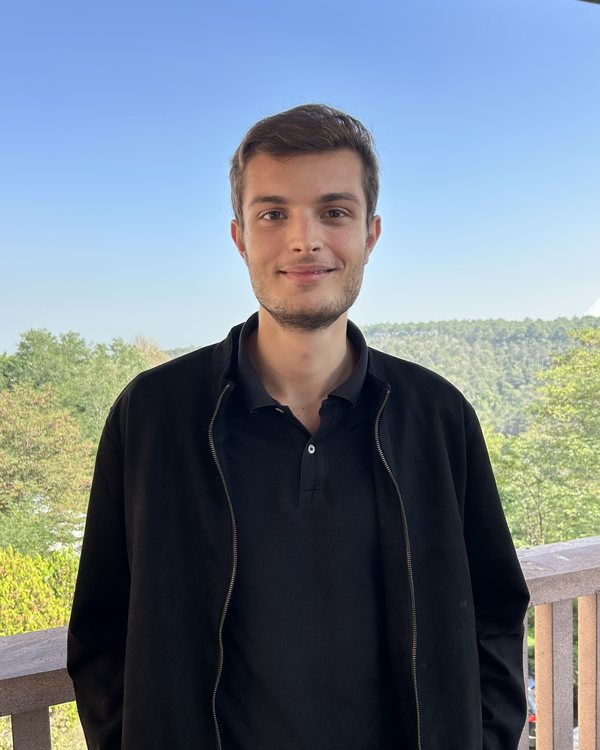
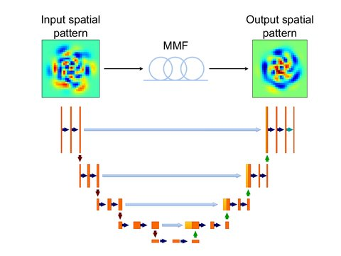

Bahadır Utku Kesgin
Undergraduate researcher, Laboratory of Photonic Technologies, Koç University
I study how the nonlinear, spatiotemporal dynamics of light in multimode fibers and laser cavities can do computation: photonic neural networks, reservoir computing, and fiber-based diffractive and recurrent networks. I also build the hardware this needs, from ultrafast fiber lasers to single-shot ultrafast imaging. I work with Dr. Uğur Teğin and am in my final year of a B.Sc. in Electrical & Electronics Engineering at Koç University (expected June 2027).
My first- and co-first-author work has appeared in Nanophotonics, Communications Engineering, Optics Letters, npj Unconventional Computing, and Optica, and led to a pending international patent on chaos-based computing. My research has been supported by TÜBİTAK–MAECI and TÜBİTAK STAR fellowships. I’m applying to PhD programs starting Fall 2027.
Research
My work treats optical hardware as the computer itself. Instead of simulating a neural network on a digital chip, I map the computation onto the nonlinear, spatiotemporal dynamics of light in multimode fibers and laser cavities, realizing reservoir, diffractive, recurrent, and spiking networks directly in the optical domain.
Alongside this I build the tools that make it possible, ultrafast fiber laser sources and single-shot ultrafast imaging at up to 685 billion frames per second, and I treat chaos, mode coupling, and rogue-wave statistics as resources rather than nuisances.
Areas
- Photonic neural networks & reservoir computing
- Spatiotemporal nonlinear dynamics in multimode fibers
- Ultrafast fiber laser sources
- Chaotic & analog computing with strange attractors
- Single-shot ultrafast imaging
Publications
Papers marked Interactive come with a small in-browser simulation of their core mechanism. Click the figure or the button to open it.
Journal articles
-
Photonic neural networks at the edge of spatiotemporal chaos in multimode fibers
Nanophotonics 14(16), 2723–2732, 2025

Chaotic pulse propagation in a multimode fiber raises classification accuracy on biomedical, fashion and satellite-image datasets.
Optical computing has gained significant attention as a potential solution to the growing computational demands of machine learning, particularly for tasks requiring large-scale data processing and high energy efficiency. Optical systems offer promising alternatives to digital neural networks by exploiting light's parallelism. This study explores a photonic neural network design using spatiotemporal chaos within graded-index multimode fibers to improve machine learning performance. Through numerical simulations and experiments, we show that chaotic light propagation in multimode fibers enhances data classification accuracy across domains, including biomedical imaging, fashion, and satellite geospatial analysis. This chaotic optical approach enables high-dimensional transformations, amplifying data separability and differentiation for greater accuracy. Fine-tuning parameters such as pulse peak power optimizes the reservoir's chaotic properties, highlighting the need for careful calibration. These findings underscore the potential of chaos-based nonlinear photonic neural networks to advance optical computing in machine learning, paving the way for efficient, scalable architectures.
@article{kesgin2025photonic, title = {{Photonic neural networks at the edge of spatiotemporal chaos in multimode fibers}}, author = {Kesgin, Bahadır Utku and Teğin, Uğur}, journal = {Nanophotonics}, volume = {14}, number = {16}, pages = {2723--2732}, year = {2025}, doi = {10.1515/nanoph-2024-0593} } -
Implementing the analogous neural network using chaotic strange attractors
Communications Engineering 3, 99, 2024
An analog circuit computing with chaotic attractors matches standard machine learning on regression and classification at milliwatt power.
Machine learning studies need colossal power to process massive datasets and train neural networks to reach high accuracies, which have become gradually unsustainable. Limited by the von Neumann bottleneck, current computing architectures and methods fuel this high power consumption. Here, we present an analog computing method that harnesses chaotic nonlinear attractors to perform machine learning tasks with low power consumption. Inspired by neuromorphic computing, our model is a programmable, versatile, and generalized platform for machine learning tasks. Our model provides exceptional performance in clustering by utilizing chaotic attractors' nonlinear mapping and sensitivity to initial conditions. When deployed as a simple analog device, it only requires milliwatt-scale power levels while being on par with current machine learning techniques. We demonstrate low errors and high accuracies with our model for regression and classification-based learning tasks.
@article{kesgin2024implementing, title = {{Implementing the analogous neural network using chaotic strange attractors}}, author = {Kesgin, Bahadır Utku and Teğin, Uğur}, journal = {Communications Engineering}, volume = {3}, pages = {99}, year = {2024}, doi = {10.1038/s44172-024-00242-z} } -
Fiber-based diffractive deep neural network
Optics Letters 50, 5254–5257, 2025
Training only the mode coupling of a fiber gives an all-optical network that performs on par with digital neural networks.
Optical computing has reemerged as a promising alternative computing paradigm for providing energy-efficient information processing in the age of artificial intelligence. Among various photonic neural network platforms, diffractive optical processing systems in free space proved to be high-performance computing with high parallelism. Here, we report fiber-based diffractive deep neural networks by optimizing the linear coupling of the waveguide modes. Our approach demonstrated high performance in various machine learning tasks, such as biomedical disease, fashion, and geospatial classification, with a simple readout layer and all-optically. Operating on linear optics, our architecture performs on par with neural networks even in complex datasets where the data cannot be separated using linear operations. These results will enable efficient and scalable diffractive information processing with waveguides for real-life computing, telecommunications, and imaging applications.
@article{kesgin2025fiber, title = {{Fiber-based diffractive deep neural network}}, author = {Kesgin, Bahadır Utku and Yüce, Firdevs and Teğin, Uğur}, journal = {Optics Letters}, volume = {50}, pages = {5254--5257}, year = {2025}, doi = {10.1364/OL.570135} } -
Optical spiking neural networks via rogue-wave statistics
npj Unconventional Computing 3, 33, 2026
Rogue waves become spatial spikes: phase-engineered caustics fire only where intensity crosses the rogue-wave threshold, a passive optical nonlinearity reaching 82.5% on BreastMNIST and 95.0% on Olivetti Faces.
Optical computing could reduce the energy cost of artificial intelligence by leveraging the parallelism and propagation speed of light. However, implementing nonlinear activation, essential for machine learning, remains challenging in low-power optical systems dominated by linear wave physics. Here, we introduce an optical spiking neural network that uses optical rogue-wave statistics as a programmable firing mechanism. By establishing a homomorphism between free-space diffraction and neuronal integration, we demonstrate that phase-engineered caustics enable robust, passive thresholding: sparse spatial spikes emerge when the local intensity exceeds a significant-intensity rogue-wave criterion. Using a physics-informed digital twin, we optimize granular phase masks to deterministically concentrate energy into targeted detector regions, enabling end-to-end co-design of the optical transformation and a lightweight electronic readout. We experimentally validate the approach on BreastMNIST and Olivetti Faces, achieving accuracies of 82.45% and 95.00%, respectively, competitive with standard digital baselines. These results demonstrate that extreme-wave phenomena, often treated as deleterious fluctuations, can be harnessed as structural nonlinearity for scalable, energy-efficient neuromorphic photonic inference.
@article{kesgin2026optical, title = {{Optical spiking neural networks via rogue-wave statistics}}, author = {Kesgin, Bahadır Utku and Durdu, Gülsüm Yaren and Teğin, Uğur}, journal = {npj Unconventional Computing}, volume = {3}, pages = {33}, year = {2026}, doi = {10.1038/s44335-026-00080-6} } 
Multimode fiber laser cavities as nonlinear optical processors
Communications Physics, 2026
The laser cavity is the nonlinear processor: multimode interference and gain saturation in a continuous-wave fiber laser lift a linear classifier to 85–99% accuracy.
Optical computing provides a promising path toward energy-efficient machine learning, yet implementing nonlinear transformations without complex electronics or high-power sources remains challenging. Here, we demonstrate that continuous-wave multimode fiber laser cavities can function as nonlinear optical processors. Input images encoded as phase patterns on a spatial light modulator undergo high-dimensional transformation through the interplay of multimode interference and gain saturation dynamics. The cavity maps input data into spatially stable, class-separable intensity distributions, enabling a simple linear classifier to achieve accuracies of 85–99% across diverse benchmarks — including medical imaging and remote sensing — with orders of magnitude fewer trainable parameters than deep neural networks. Our results establish multimode fiber lasers as compact, low-power physical processors for scalable optical machine learning.
@article{eslik2026multimode, title = {{Multimode fiber laser cavities as nonlinear optical processors}}, author = {Eşlik, Dilem and Kesgin, Bahadır Utku and Kılınç, Fatma Nur and Teğin, Uğur}, journal = {Communications Physics}, year = {2026}, doi = {10.1038/s42005-026-02823-0} }-
Recurrent neural networks implemented through spatiotemporal light propagation in optical fibers
Optica 13(12), 2505–2515, 2026
Recurrence happens in the optics: light recirculating through a fixed multimode-fiber loop carries the fading memory of a recurrent network, with no trainable optical parameters or electronic feedback.
Recurrent neural networks excel at temporal tasks and video processing but require energy-intensive sequential memory operations. We demonstrate that multimode optical fibers naturally implement spatiotemporal recurrent computation through passive light propagation. Video frames are encoded onto separate optical beams with controlled time delays; these beams combine and recirculate through a fiber loop where interference and nonlinear propagation generate high-dimensional states encoding both current inputs and fading memory. Remarkably, the entire optical system remains fixed with no trainable parameters or electronic feedback, yet this single physical configuration achieves competitive performance across diverse temporal and spatiotemporal learning tasks: chaotic time-series forecasting, human action recognition, steering angle prediction, and surgical skill assessment. Our results show that recurrent temporal processing can emerge directly from spatiotemporal wave dynamics. This paradigm shift from algorithmic to physical recurrence offers an energy-efficient pathway to temporal artificial intelligence by leveraging intrinsic spatiotemporal optical nonlinearities within multimode fibers.
@article{eslik2026recurrent, title = {{Recurrent neural networks implemented through spatiotemporal light propagation in optical fibers}}, author = {Eşlik, Dilem and Kesgin, Bahadır Utku and Teğin, Uğur}, journal = {Optica}, volume = {13}, number = {12}, pages = {2505--2515}, year = {2026}, doi = {10.1364/OPTICA.604500} }
Manuscripts under review

Single-shot holographic gradients for training wavefronts through disorder
arXiv preprint, 2026 · under review
One hologram per step trains light through scattering media: focusing and imaging through diffusers, self-correction under drift, and an optical computing layer that plays a video game.
Training optical systems in situ needs the gradient of their loss, yet a camera records only intensity and the medium is never exactly known. We show that one off-axis hologram gives this gradient, an approach we call holographic gradients. Light passes through the medium only forward; the hologram measures the error, and a compact adjoint, fitted to ten probes, is refreshed in seconds during training. Each step costs one modulated pattern. Through a thin diffuser, it focuses light and forms images as well as a measured transmission matrix, without its thousands of patterns. Under controlled drift, refreshing the adjoint recovers a grating to 17.6 dB, against 9.1 dB for a frozen model and 19.5 dB without drift, and training succeeds through a thick diffuser. Trained offline, the reference beam becomes a computing layer that plays a video game. Holographic gradients let optical systems learn while they operate, from imaging through dynamic media to self-correcting processors.
@article{ekec2026single, title = {{Single-shot holographic gradients for training wavefronts through disorder}}, author = {Ekec, Kerem and Kesgin, Bahadır Utku and Teğin, Uğur}, journal = {arXiv preprint arXiv:2611.27439}, year = {2026} }-
Low-cost passive single-shot ultrafast imaging at 685 Gfps
arXiv preprint, 2026 · under review
Under US$500 of off-the-shelf parts films a picosecond laser pulse at 685 Gfps in a single exposure.
Capturing ultrafast transient phenomena conventionally requires streak cameras or computational imaging based on compressed sensing, which lead to complex and costly systems. In this Letter, we demonstrate, to the best of our knowledge, the first fully passive single-shot ultrafast imaging architecture assembled entirely from off-the-shelf, low-cost components. A commercial microlens array combined with a stack of standard microscope cover glasses maps temporal information into multiple spatial channels, and a consumer-grade CMOS image sensor records all delayed replicas within a single camera exposure. The proposed system has a total hardware cost below US$500 and captures the evolution of a picosecond laser pulse with a temporal sampling interval of 1.46 ps, an effective frame rate of 685 Gfps, and a sequence depth of ten frames. The temporal fidelity of the system is verified by recovering the expected Gaussian pulse profile, and the spatial resolution is characterized through a point-source measurement with a point spread function of 1.86 and 1.62 pixels full width at half maximum along the horizontal and vertical directions, respectively. The proposed architecture presents an alternative approach to single-shot ultrafast imaging with a simple, low-cost, computation-free, and fully passive design.
@article{eslik2026lowcost, title = {{Low-cost passive single-shot ultrafast imaging at 685 Gfps}}, author = {Eşlik, Dilem and Kesgin, Bahadır Utku and Teğin, Uğur}, journal = {arXiv preprint arXiv:2604.27898}, year = {2026} } 
Real-time surrogate modeling of nonlinear pulse evolution in multimode fibers
arXiv preprint, 2025 · under review
A U-Net predicts nonlinear multimode-fiber propagation in real time with ~88% structural similarity to full simulations.
Modeling nonlinear pulse propagation in multimode fibers is challenging due to the large number of interacting modes and the resulting spatiotemporal complexity. Traditional optimization methods often become intractable, while learning-based approaches, such as recurrent neural networks, suffer from high computational cost and long inference times. We present a U-Net architecture as a fast, accurate surrogate for modeling nonlinear pulse propagation in multimode fibers. This approach overcomes the intractability of traditional methods while offering low computational cost. Trained on data generated by beam propagation method, our approach achieves an ~88% average structural similarity index with simulations. The model can generalize to untrained propagation distances, demonstrating convolutional architectures as efficient tools for simulating complex spatiotemporal dynamics in multimode fibers and offering potential for applications like mode decomposition.
@article{carpinlioglu2025realtime, title = {{Real-time surrogate modeling of nonlinear pulse evolution in multimode fibers}}, author = {Çarpınlıoğlu, Bora and Kesgin, Bahadır Utku and Teğin, Uğur}, journal = {arXiv preprint arXiv:2505.12517}, year = {2025} }
* Equal contribution.
Patent
Kesgin, B. U. & Teğin, U. Method and system for enhanced machine learning utilizing chaotic attractors. International Patent (PCT) WO2025063908A1.
Selected talks
- Single-shot imaging achieving 685 billion FPS using spatial multiplexing
- Photonic neural networks with multimode fibers at the edge of spatiotemporal chaos
- Chaotic photonic reservoir computing with complex dynamics in multimode fibers
- Diffractive deep neural networks via mechanical mode coupling optimization
- Spatiotemporal chaos-based photonic neural networks
Selected from 11 presentations at SPIE Photonics West, CLEO, CLEO Europe, SPIE Optics + Photonics, and FiO. See the CV for the full list.
Teaching
- EEE 429 · Fundamentals of Optics
- EEE 206 · Electromagnetic Theory
News
- Nov 2026“Single-shot holographic gradients for training wavefronts through disorder” posted on arXiv.
- Nov 2026“Recurrent neural networks implemented through spatiotemporal light propagation in optical fibers” published in Optica.
- Oct 2026“Multimode fiber laser cavities as nonlinear optical processors” published in Communications Physics.
- Aug 2026Started as a TÜBİTAK–MAECI Collaborative Project Fellow (“Multiphoton Imaging System with Spatiotemporal Fiber Lasers for Real-Time Optical Biopsy”).
- Jun 2026“Optical spiking neural networks” accepted at npj Unconventional Computing.
- Jan 2026Presented talks at SPIE Photonics West, San Francisco.
- Sep 20251-year TÜBİTAK STAR research fellowship (“Harnessing spatiotemporal nonlinear dynamics of optical cavities for tunable lasers and optical computing”).
- Aug 2025“Fiber-based diffractive deep neural network” published in Optics Letters; talks at CLEO US, CLEO Europe and SPIE Optics + Photonics.
- Feb 2025“Photonic neural networks at the edge of spatiotemporal chaos in multimode fibers” published in Nanophotonics; talks at SPIE Photonics West.
- Jul 2024“Implementing the analogous neural network using chaotic strange attractors” published in Communications Engineering.